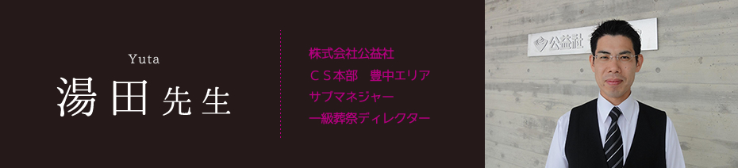
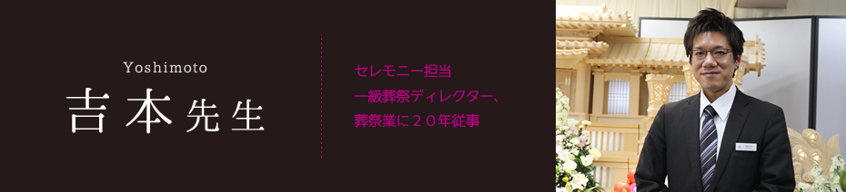

一日の仕事の流れ・内容
まず、お葬式を行うにあたり、打ち合わせを行いますが、故人様はどのような人柄であったか、趣味は？好きな食べ物は？好きな音楽は？などお聞きします。そしてご遺族の想いや要望を聞きだしどのような形で反映できるかを考えて葬儀に臨みます。
それはやり直しが効かない、たった一度のお葬式。
哀しみの中で行われるお葬式ですが、お葬式の後は「ちゃんと送れた」と安堵感を持ってもらいたい、満足してもらいたいと思っております。
葬儀を施行する中で、御遺族へのヒアリングを大切にしております。
想い出に残るエピソード
故人様に経帷子をお着せするとき、「よかったら、こちらの紐を結んで差し上げてください」と促すと、「いいんですか」と言って御遺族が紐を結ばれました。「ごめんね。ありがとうね。」と何度も何度も声をかけられ冷静な印象だった喪主様が人目をはばからず感極まり涙を流されたことがありました。
故人様の為に何かをするというのは、ご遺族にとって何よりもかけがえのない時間になると思ってます。またそれは大切な方を亡くした悲しみを和らげグリーフケア（喪失から回復するために行われる援助）に大きな役割があると感じております。
これからもご遺族をサポートし、尊厳ある最期のお別れのお手伝いを行って参りたいと思います。
葬儀業界を目指す高校生へのメッセージ
我々、葬祭業のサービスは、どれだけご遺族に寄り添えるか、御遺族の立場にたって行えるかだと思います。
大切な方を亡くされ何をすべきかわからず戸惑いや不安が先立ってしまうものです。
そんなお客様の「声なき声」に、いかに気づき、対応することができるかだと思います。一つとして同じ葬儀、お別れはありません。はじめは地域によって異なる風習もあり、知識として学習しなければならないことはたくさんあり大変ですが、ご遺族を支える、ご遺族にとって最良のパートナーになれるよう、一緒に成長していきましょう

葬儀のお仕事とは
葬儀の仕事は故人を敬い、ご家族の悲しみや不安を癒すお手伝いが出来るお仕事です。「死」は非日常であり、分からない事が多い為、葬儀の説明、打合せを通して故人の想いや趣味、人柄、家族の想いをひとつづう形にして行く事がお仕事になります。
家族の想い、気持ちを通夜・葬儀へと形にすることで家族は安心し故人の「死」を受け入れる努力をしていけます。その「死」を受け入れる最初のお手伝いが行えるのが葬儀のお仕事です。
仕事のやりがい
ご葬儀が滞りなく終わった後に、ご遺族からの感謝の言葉」です。
悲しみと不安でいっぱいのご遺族と一緒に形ある葬儀を作っていきますが、まずご遺族の故人への想いをしっかり聞く事ができ、故人やご遺族にとって最高のご提案をし、その想いをきちんと形に出来たときに、ご遺族の方より「本当にありがとう」と言っていただける、この言葉ひとつが私の仕事のやりがいです。
葬儀の世界を目指すみなさんへ
「死」とは誰にでもおとずれること、そして「ご葬儀」もなくてならないものです。人生の最期を締めくくるご葬儀をお手伝いする中で、ご遺族の想いや気持ちに寄り添い、わかってあげられるような人になって欲しいです。どんな状況でも臨機応変に対応ができるように、しっかりと知識を身につけ、想いを持ったディレクターを目指してください。
また、葬儀に関する文化や歴史を充分に学んで欲しいです。なぜ線香をあげるのか、なぜロウソクに火を灯すのか、そんな意味を理解した上でご家族の想いを叶えてあげて欲しいと思います。